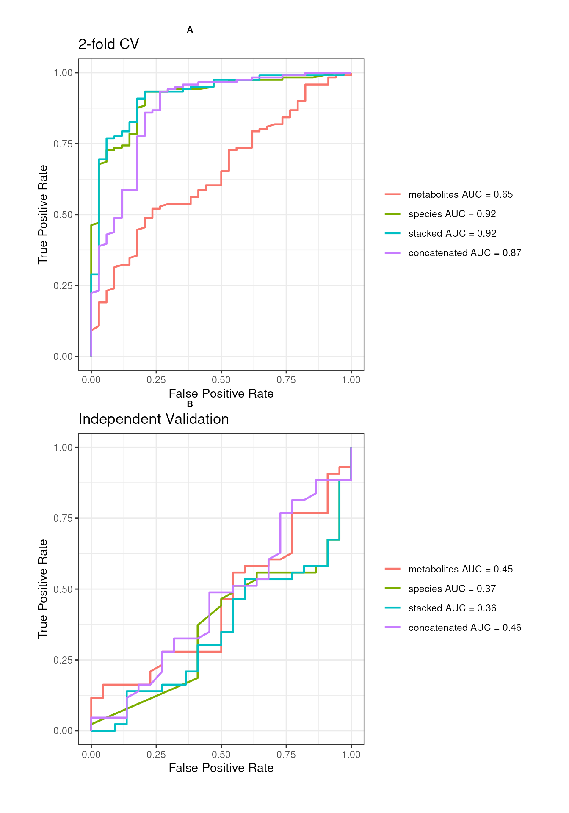
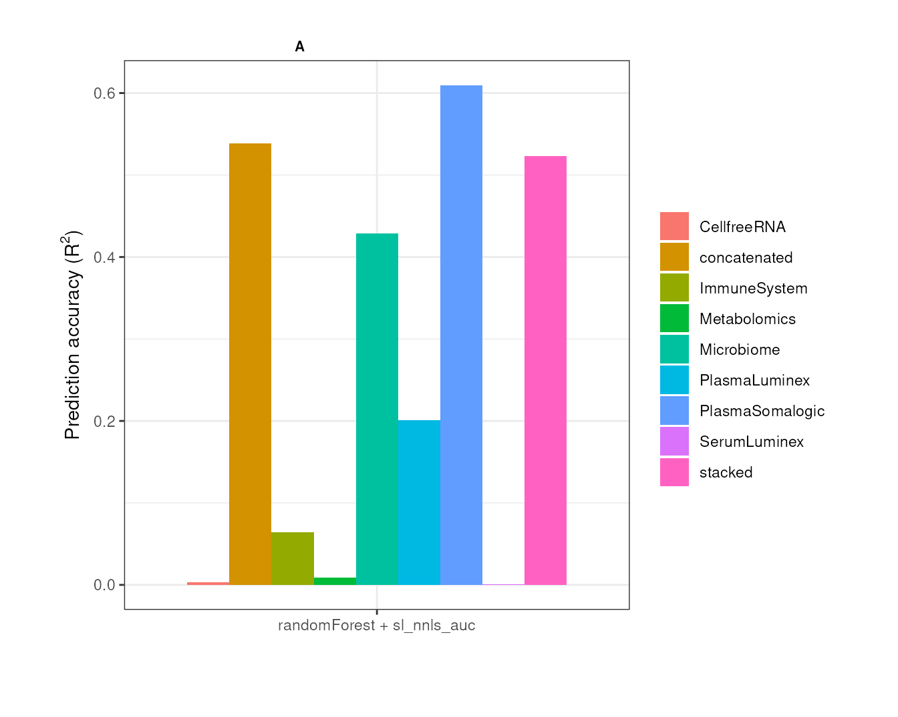
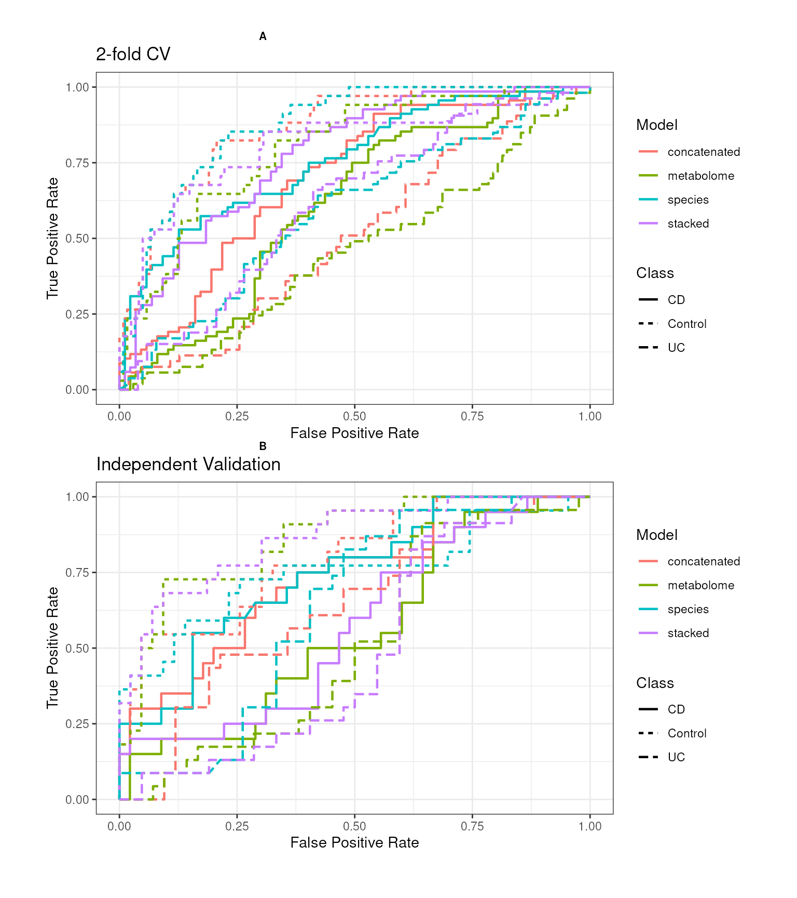
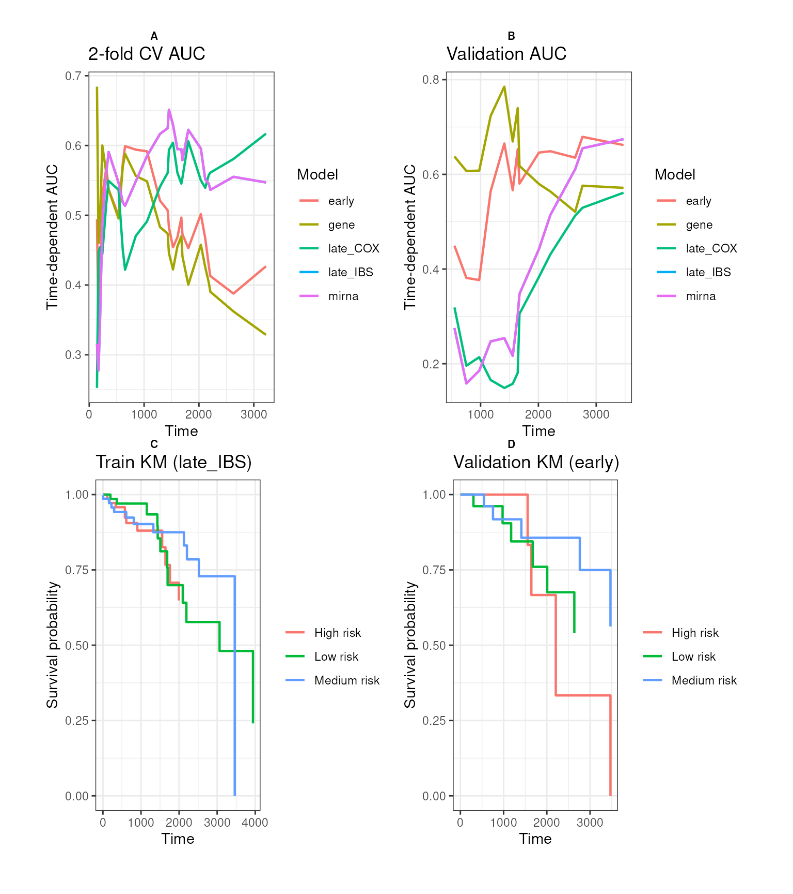

vignettes/IntegratedLearner.Rmd
IntegratedLearner.RmdThis vignette is a practical tutorial for binary, multiclass,
continuous, and survival outcome workflows in
IntegratedLearner.
The examples use seven small MAE RDS files in
inst/extdata, accessed directly with
readRDS(system.file("extdata", filename, package = "IntegratedLearner")).
Each assay retains at most 25 variable features selected from training
data in original order; validation uses identical feature IDs. All
original samples and outcomes are kept. These subsets demonstrate the
API; they are not intended to reproduce full-cohort scientific
results.
IntegratedLearner is designed for multi-omics studies
where each assay layer can carry complementary signal and where users
want a unified interface for standard integrated learning or standalone
cooperative multiview learning. This makes the package a natural fit for
Bioconductor workflows built around MultiAssayExperiment,
SummarizedExperiment, and curated assay containers.
Within the Bioconductor ecosystem, the package is intended to sit after assay assembly and harmonization, and before downstream interpretation. IntegratedLearner focuses on supervised multi-omics prediction/integration rather than general container management or unsupervised integration.
In a standard Bioconductor analysis, you would typically import or
construct assay-level data, store those assays in a
MultiAssayExperiment, inspect the object with standard
accessors, fit IntegratedLearner(), and then carry
predictions, layer weights, and feature-level summaries into downstream
interpretation or visualization steps.
A compact workflow is:
MultiAssayExperiment.experiments(),
assay(), colData(), and
sampleMap().IntegratedLearner().Compared with packages that primarily focus on assay containers,
preprocessing, or narrower outcome families,
IntegratedLearner is centered on the modeling layer itself:
it provides a common interface for continuous, binary, multiclass, and
survival prediction while remaining compatible with standard
Bioconductor data structures. In that sense, it is intended to
complement upstream Bioconductor tools rather than replace them.
The goal is to show a complete end-to-end pattern you can adapt to your own multi-omics study:
IntegratedLearner supports two execution modes:
multiview
cooperative learning over feature matrices from each layer.Cooperative learning is enabled with
run_intermediate = TRUE. In this mode, IntegratedLearner
skips base learners, early fusion, late fusion, and supervised
screening. It is currently supported for continuous, binary, and
survival outcomes. For multiclass outcomes,
IntegratedLearner prints a message and ignores
run_intermediate.
Optional feature selection workflow used in this vignette:
filter_method,
filter_pct) on training features.run_screening = TRUE,
screen_pct) in a fold-safe manner:
Install the release version from Bioconductor with:
if (!requireNamespace("BiocManager", quietly = TRUE)) {
install.packages("BiocManager")
}
BiocManager::install("IntegratedLearner")For the development version, use:
BiocManager::install("himelmallick/IntegratedLearner")
# Main package
library(IntegratedLearner)
# Tutorial dependencies
library(dplyr)
library(ggplot2)
library(SuperLearner)
library(caret)
library(cowplot)
library(bayesplot)
library(S4Vectors)
library(SummarizedExperiment)
library(MultiAssayExperiment)
library(survival)
if (requireNamespace("multiview", quietly = TRUE)) {
library(multiview)
}
if (use_sl_bart) {
library(bartMachine)
}This vignette uses MultiAssayExperiment throughout and
treats MAE as the primary user-facing entry point. The older PCL input
mode is still supported for backward compatibility, but the recommended
workflow is to stay inside standard Bioconductor containers for data
inspection and model handoff.
For IntegratedLearner, each MAE example should
satisfy:
SummarizedExperiment
colData
colData
colData
For survival workflows, colData should contain
time and event columns (with
event coded as 0/1). You can also keep a
convenience survival column such as Y or
outcome_surv as a Surv(time, event)
object.
You can keep your own column names and map them in the wrapper:
fit <- IntegratedLearner(
MAE_train = mae_train,
outcome_col = "disease_status",
subject_id_col = "participant_id",
family = stats::binomial()
)Automatic coercion in the wrapper:
family = gaussian(): outcome is coerced to numeric
(errors if conversion fails).family = binomial(): two classes are mapped
internally to {0,1}.family = binomial(): class labels are
retained.IntegratedLearner is intended to plug into a standard
Bioconductor workflow, not replace one. In practice, users should
continue to inspect and manipulate their inputs with the usual
MultiAssayExperiment and SummarizedExperiment
accessors before modeling:
PRISM_MAE <- readRDS(system.file(
"extdata", "PRISM_MAE.rds", package = "IntegratedLearner", mustWork = TRUE
))
mae_example <- PRISM_MAE
# Top-level sample annotations used by IntegratedLearner
head(as.data.frame(S4Vectors::DataFrame(MultiAssayExperiment::colData(mae_example)))[, 1:4])
#> Diagnosis dysbiosis_score Y subjectID
#> G35127 CD 0.9341207 1 G35127
#> G35128 CD 0.5962602 1 G35128
#> G35152 CD 0.9505732 1 G35152
#> G36347 CD 0.9966957 1 G36347
#> G36348 CD 0.8475403 1 G36348
#> G36349 CD 0.9569372 1 G36349
# Available experiments/layers in the MAE
names(MultiAssayExperiment::experiments(mae_example))
#> [1] "species" "metabolites"
# Pull one layer as a SummarizedExperiment
se_example <- MultiAssayExperiment::experiments(mae_example)[[1]]
class(se_example)
#> [1] "SummarizedExperiment"
#> attr(,"package")
#> [1] "SummarizedExperiment"
# Standard assay extraction from the layer
assay_names <- SummarizedExperiment::assayNames(se_example)
assay_names
#> [1] "abundance"
head(SummarizedExperiment::assay(se_example, assay_names[1]))
#> G35127 G35128 G35152 G36347
#> Granulicella_unclassified -0.05253649 -0.05127158 -0.06133085 0.004887447
#> Actinomyces_graevenitzii 1.04668500 -1.32629194 -1.51654615 -3.247989324
#> Actinomyces_johnsonii -0.70327678 -0.41575776 -0.29326475 -0.314361595
#> Actinomyces_massiliensis -0.56808952 0.14722099 0.05660884 -1.077235688
#> Actinomyces_naeslundii -0.49546119 -0.15921604 -0.03146485 -0.354377267
#> Actinomyces_odontolyticus -2.60071428 -2.10648484 -3.10982881 -3.846828858
#> G36348 G36349 G36350 G36351
#> Granulicella_unclassified -0.006164066 -0.06068187 0.01958055 -0.00291914
#> Actinomyces_graevenitzii -0.717183019 -1.50427168 -1.68488463 -0.65581069
#> Actinomyces_johnsonii -0.340485318 -0.30116753 -0.33870436 -0.37999919
#> Actinomyces_massiliensis -0.159240362 0.06245478 -0.50807364 -0.13001064
#> Actinomyces_naeslundii -0.139758576 -0.03970686 -0.27103949 -0.18096864
#> Actinomyces_odontolyticus -2.238237450 -0.22407833 -2.10747316 7.10740921
#> G36352 G36353 G36354 G36355
#> Granulicella_unclassified -0.05776143 -0.007104484 -0.02798171 -0.04964912
#> Actinomyces_graevenitzii -1.44903659 -2.227858510 -1.16809841 0.28934691
#> Actinomyces_johnsonii -0.33673001 -0.631955729 -0.69300749 -0.43551469
#> Actinomyces_massiliensis 4.12202564 -0.871627902 -0.47895003 0.16183585
#> Actinomyces_naeslundii -0.07679592 -0.480124737 -0.41065892 -0.17982107
#> Actinomyces_odontolyticus -2.75380353 -2.700100958 -2.34537624 -1.94465517
#> G36356 G36357 G36358 G36359
#> Granulicella_unclassified 0.001299263 -0.01103146 0.01730911 -0.07698314
#> Actinomyces_graevenitzii -0.576026671 -0.80924151 -1.72784526 -1.85085413
#> Actinomyces_johnsonii -0.431367226 -0.28121451 -0.31104465 -0.72086328
#> Actinomyces_massiliensis -0.092011992 -0.20308495 -0.52853445 -0.20756435
#> Actinomyces_naeslundii -0.234541714 -0.07794349 -0.24219244 -0.38066431
#> Actinomyces_odontolyticus -1.493820959 -2.72372647 -2.33403470 -2.60201484
#> G36360 G36361 G36362 G36363
#> Granulicella_unclassified -0.005839574 0.01800834 0.009845776 -0.05970839
#> Actinomyces_graevenitzii -0.711045786 4.42949600 -1.869001603 -1.48585999
#> Actinomyces_johnsonii -0.344436706 8.47614049 -0.220162746 -0.31302169
#> Actinomyces_massiliensis -0.156317389 8.86079698 -0.595762822 0.07122370
#> Actinomyces_naeslundii -0.143879582 6.12525018 -0.147409306 -0.05206988
#> Actinomyces_odontolyticus -2.205871516 7.27449295 4.629397782 4.99684820
#> G36365 G36366 G36367 G36368
#> Granulicella_unclassified -0.06295331 -0.004217111 -0.005806513 -0.06003288
#> Actinomyces_graevenitzii -1.54723231 -0.680359624 1.168632075 -1.49199722
#> Actinomyces_johnsonii -0.27350782 -0.364193642 -0.647761278 -0.30907030
#> Actinomyces_massiliensis 0.04199397 -0.141702527 -0.859936012 0.06830073
#> Actinomyces_naeslundii -0.01085982 -0.164484612 -0.496608761 -0.04794888
#> Actinomyces_odontolyticus -3.27165848 -2.044041844 -2.570637221 2.90391516
#> G36369 G36370 G36371 G36372
#> Granulicella_unclassified -0.05224506 -0.01694897 -0.004866096 -0.063277806
#> Actinomyces_graevenitzii -1.34470364 -0.95943251 -0.692634089 -1.553369545
#> Actinomyces_johnsonii -0.40390360 -0.82735466 -0.356290867 -0.269556429
#> Actinomyces_massiliensis 0.13845207 -0.37956896 -0.147548472 0.039071002
#> Actinomyces_naeslundii -0.14685302 -0.55077312 -0.156242600 -0.006738816
#> Actinomyces_odontolyticus -2.20358264 -1.24493447 0.791680370 2.332149272
#> G36374 G36375 G36378 G36379
#> Granulicella_unclassified -0.06789735 0.009196791 0.01860708 -0.04142710
#> Actinomyces_graevenitzii -1.67901162 -1.881276067 -1.70329633 -2.59471794
#> Actinomyces_johnsonii -0.83150213 -0.212259971 -0.32685020 -0.22035883
#> Actinomyces_massiliensis -0.12572112 -0.601608767 -0.51684256 -0.34483795
#> Actinomyces_naeslundii -0.49605247 -0.139167294 -0.25867647 -0.08856765
#> Actinomyces_odontolyticus -1.69576868 -3.143183056 6.35613318 -3.56165133
#> G36380 G36381 G36382 G36383
#> Granulicella_unclassified -0.04110260 -0.05224506 0.03593207 -0.05938389
#> Actinomyces_graevenitzii 4.94228519 6.48054316 -1.45023842 -1.47972275
#> Actinomyces_johnsonii -0.22431021 -0.40390360 -0.38312005 -0.31697308
#> Actinomyces_massiliensis -0.34191498 0.13845207 -0.92963674 0.07414667
#> Actinomyces_naeslundii -0.09268866 -0.14685302 -0.35199511 -0.05619089
#> Actinomyces_odontolyticus -3.52928540 -2.20358264 -2.94417212 -2.91563320
#> G36384 G36385 G36386 G36387
#> Granulicella_unclassified -0.02150616 -0.01135595 -0.05873491 -0.02904613
#> Actinomyces_graevenitzii -2.29256218 -0.81537874 -1.46744829 -2.47343934
#> Actinomyces_johnsonii -0.30823977 -0.27726312 -0.32487585 -0.83462299
#> Actinomyces_massiliensis -0.73424835 -0.20600792 0.07999262 -0.92534723
#> Actinomyces_naeslundii -0.21485434 -0.07382248 -0.06443290 -0.66707895
#> Actinomyces_odontolyticus -4.04232502 3.86252714 -2.85090133 -2.72536270
#> G36389 G36390 G36392 G36394
#> Granulicella_unclassified 0.02814425 0.01633563 -0.02116737 -0.07503618
#> Actinomyces_graevenitzii -1.59753200 -1.74625695 -1.03921653 -1.81403073
#> Actinomyces_johnsonii -0.28828676 -0.29919049 -0.77598663 5.27878701
#> Actinomyces_massiliensis -0.99978808 -0.53730337 -0.41756761 -0.19002652
#> Actinomyces_naeslundii -0.25309097 -0.22982943 -0.49720004 2.51945997
#> Actinomyces_odontolyticus -3.72095455 -2.43113250 3.65622523 6.23559551
#> G36395 G36396 G48777 G48780
#> Granulicella_unclassified 0.01958055 -0.02580121 -0.06133085 -0.05776143
#> Actinomyces_graevenitzii 3.91094074 -2.41206702 -0.43401430 1.28416581
#> Actinomyces_johnsonii -0.33870436 -0.87413686 -0.29326475 6.10453778
#> Actinomyces_massiliensis -0.50807364 -0.89611750 0.05660884 2.67421984
#> Actinomyces_naeslundii -0.27103949 -0.70828901 -0.03146485 -0.07679592
#> Actinomyces_odontolyticus -2.10747316 4.91222115 1.64870221 5.85895296
#> G48781 G48783 G48784 G48786
#> Granulicella_unclassified 0.02087852 -0.0006476922 -0.05675489 0.03171367
#> Actinomyces_graevenitzii -1.66033570 -0.6128500661 1.96124137 5.51434470
#> Actinomyces_johnsonii -0.35450991 2.0687611082 -0.65190875 -0.33175202
#> Actinomyces_massiliensis -0.49638175 -0.1095498280 -0.60608817 -0.96763539
#> Actinomyces_naeslundii -0.28752351 -0.2098156784 1.24942852 -0.29842203
#> Actinomyces_odontolyticus -1.97800942 -1.6880165658 2.93588947 3.91180455
#> G48787 G48789 G48790 G48791
#> Granulicella_unclassified -0.005515081 -0.01103146 -0.01070696 -0.01070696
#> Actinomyces_graevenitzii -0.704908554 4.39332806 2.07609172 -0.80310427
#> Actinomyces_johnsonii -0.348388093 -0.28121451 -0.28516590 -0.28516590
#> Actinomyces_massiliensis -0.153394417 -0.20308495 -0.20016198 -0.20016198
#> Actinomyces_naeslundii -0.148000588 -0.07794349 -0.08206449 -0.08206449
#> Actinomyces_odontolyticus -2.173505582 3.96560227 5.71608938 1.57677340
#> G48792 G48793 G48794 G48795
#> Granulicella_unclassified -0.01103146 -0.01038247 -0.008760007 -0.02604906
#> Actinomyces_graevenitzii -0.80924151 -0.79696704 -0.766280879 4.07521830
#> Actinomyces_johnsonii 6.92682253 -0.28911728 -0.308874220 -0.25292035
#> Actinomyces_massiliensis -0.20308495 -0.19723901 -0.182624143 -0.77516997
#> Actinomyces_naeslundii -0.07794349 -0.08618550 -0.106790529 -0.15716026
#> Actinomyces_odontolyticus -2.72372647 -2.65899460 -2.497164926 1.93283843
#> G48796 G48798 G48799 G48802
#> Granulicella_unclassified 0.01601114 -0.008111022 0.02282548 -0.0090845
#> Actinomyces_graevenitzii -0.75239419 3.214224126 2.84358630 -0.7724181
#> Actinomyces_johnsonii -0.29523910 -0.316776995 -0.37821824 -0.3049228
#> Actinomyces_massiliensis -0.54022634 -0.176778198 -0.47884392 -0.1855471
#> Actinomyces_naeslundii -0.22570842 -0.115032540 -0.31224955 -0.1026695
#> Actinomyces_odontolyticus -2.46349843 3.057708089 3.01664333 3.4824312
#> G48804 G48805 G48806 G48807
#> Granulicella_unclassified 0.01893157 0.006326602 -0.05321854 -0.01297841
#> Actinomyces_graevenitzii -1.69715909 -2.048447396 8.79860850 2.71750390
#> Actinomyces_johnsonii -0.33080159 -0.640808932 -0.39204943 -0.25750619
#> Actinomyces_massiliensis -0.51391959 -1.319497754 0.12968315 -0.22062279
#> Actinomyces_naeslundii -0.26279747 -0.523991309 -0.13449000 -0.05321745
#> Actinomyces_odontolyticus 1.52083872 -3.828093337 -2.30068045 3.32493041
#> G48808 G48810 G48812 G48814
#> Granulicella_unclassified -0.01005798 -0.04110260 -0.02650044 0.02752833
#> Actinomyces_graevenitzii 4.35102026 3.96964561 1.92658333 1.55278289
#> Actinomyces_johnsonii -0.29306867 -0.22431021 -0.40212264 -0.58370856
#> Actinomyces_massiliensis -0.19431603 -0.34191498 -0.21038121 1.49469774
#> Actinomyces_naeslundii -0.09030650 -0.09268866 -0.27813393 -0.59757813
#> Actinomyces_odontolyticus 1.96683686 3.67370141 6.32296792 3.39267094
#> G48815 G48817 G48819 G48820
#> Granulicella_unclassified -0.05419201 0.002921726 0.04577656 0.007624573
#> Actinomyces_graevenitzii -1.38152703 -0.545340509 2.34867916 -2.023898466
#> Actinomyces_johnsonii -0.38019527 -0.451124162 -0.18772112 -0.656614481
#> Actinomyces_massiliensis 0.12091423 -0.077397130 1.96581859 -1.307805863
#> Actinomyces_naeslundii -0.12212698 -0.255146744 -0.28134673 -0.540475333
#> Actinomyces_odontolyticus -2.39777825 -1.331991287 2.74634317 0.348781581
#> G48821 G48822 G48823 G48826
#> Granulicella_unclassified -0.008435515 -0.0003231996 1.76377322 -0.0009721848
#> Actinomyces_graevenitzii 3.291973864 6.2483293085 -1.46744829 -0.6189872986
#> Actinomyces_johnsonii 2.229733223 -0.4116102892 -0.32487585 -0.4037075146
#> Actinomyces_massiliensis 0.885925692 0.8933731446 0.07999262 -0.1124728006
#> Actinomyces_naeslundii -0.110911535 -0.2139366844 -0.06443290 -0.2056946724
#> Actinomyces_odontolyticus 5.007733793 5.4681324015 -1.11390082 4.8903973023
#> G48827 G48831 G48832 G48836
#> Granulicella_unclassified -0.063277806 -0.01103146 -0.05321854 0.0258728
#> Actinomyces_graevenitzii -1.553369545 -0.80924151 -1.36311534 4.0891743
#> Actinomyces_johnsonii -0.269556429 -0.28121451 3.35116173 -0.2606270
#> Actinomyces_massiliensis 0.039071002 -0.20308495 0.12968315 1.3085295
#> Actinomyces_naeslundii -0.006738816 -0.07794349 -0.13449000 0.7757561
#> Actinomyces_odontolyticus 3.712401655 -2.72372647 -1.30068045 -1.8098504
#> G48838 G48839 G48840 G48841
#> Granulicella_unclassified 0.006925342 0.9223679 -0.05707939 -0.03683396
#> Actinomyces_graevenitzii -1.924236695 -0.8213358 3.92099183 3.02140896
#> Actinomyces_johnsonii -0.184600260 -0.7129605 6.23945313 -0.73978969
#> Actinomyces_massiliensis -0.622069575 -0.2134103 3.86113030 -0.99549857
#> Actinomyces_naeslundii -0.110320252 -0.3724223 3.41760737 -0.56817481
#> Actinomyces_odontolyticus 3.955778233 1.6931378 8.39745649 -3.50214512
#> G48842 G72670 G72671 G72672
#> Granulicella_unclassified -0.01232943 -0.06262882 -0.01297841 -0.04272507
#> Actinomyces_graevenitzii 4.05319320 -1.54109508 -0.84606490 -0.42135433
#> Actinomyces_johnsonii 6.20258541 -0.27745920 -0.25750619 -0.20455328
#> Actinomyces_massiliensis 4.93831575 0.04491695 -0.22062279 -0.35652984
#> Actinomyces_naeslundii 2.52663443 -0.01498083 -0.05321745 -0.07208363
#> Actinomyces_odontolyticus 3.61065451 2.69300925 -2.91792207 1.72841300
#> G72673 G72674 G72675 G72676
#> Granulicella_unclassified 0.01276621 -0.06165534 -0.01759795 -0.02475108
#> Actinomyces_graevenitzii 1.29841674 5.74354939 -0.97170697 -2.35393450
#> Actinomyces_johnsonii -0.25572523 0.71068664 -0.81945188 -0.26872590
#> Actinomyces_massiliensis -0.56945607 0.05368586 -0.38541491 -0.76347808
#> Actinomyces_naeslundii -0.18449836 3.19559594 -0.54253111 -0.17364429
#> Actinomyces_odontolyticus -2.78715778 2.40625530 -1.30966634 2.26918195
#> G72677 G72678 G72679 G72680
#> Granulicella_unclassified -0.04207608 -0.05905940 -0.02960418 -0.008726947
#> Actinomyces_graevenitzii -2.60699241 -1.47358552 3.40721271 4.650455876
#> Actinomyces_johnsonii -0.21245605 -0.32092446 -0.67325056 -0.612198792
#> Actinomyces_massiliensis -0.35068390 0.07706965 -0.49356489 2.287404745
#> Actinomyces_naeslundii -0.08032564 -0.06031189 -0.39005389 -0.459519707
#> Actinomyces_odontolyticus -3.62638320 -2.88326727 -2.50720591 -2.861930630
#> G72681 G72682 G72683 G72684
#> Granulicella_unclassified -0.06295331 -0.04867564 0.02120302 -0.04040337
#> Actinomyces_graevenitzii 2.19187324 -1.27719408 1.12921192 -2.68824248
#> Actinomyces_johnsonii -0.27350782 -0.44736886 -0.35846130 -0.69632443
#> Actinomyces_massiliensis 0.04199397 0.17060477 -0.49345878 -1.02765127
#> Actinomyces_naeslundii -0.01085982 -0.19218409 4.29854609 -0.52284374
#> Actinomyces_odontolyticus 2.76693068 3.91372245 -1.94564348 2.19493040
#> G72685 G72686 G72687 G72688
#> Granulicella_unclassified -0.07763212 -0.02506128 -0.009375932 1.293047e-06
#> Actinomyces_graevenitzii 5.47669458 -1.11286332 -2.270819137 -6.005756e-01
#> Actinomyces_johnsonii -0.71296051 -0.72856998 -0.604296018 -4.155617e-01
#> Actinomyces_massiliensis -0.21341030 -0.45264328 -0.892088710 -1.037039e-01
#> Actinomyces_naeslundii -0.37242229 -0.44774797 -0.451277695 -2.180577e-01
#> Actinomyces_odontolyticus 3.56077819 -2.05408283 -2.926662499 -1.623285e+00
#> G72689 G72690 G72691 G72692
#> Granulicella_unclassified -0.07795662 0.02314997 0.02055403 -0.007104484
#> Actinomyces_graevenitzii -1.86926582 -1.61737507 4.61147184 -2.227858510
#> Actinomyces_johnsonii -0.70900912 -0.38216962 8.82237644 -0.631955729
#> Actinomyces_massiliensis -0.21633327 -0.47592095 5.13125652 -0.871627902
#> Actinomyces_naeslundii -0.36830129 -0.31637055 1.63645976 -0.480124737
#> Actinomyces_odontolyticus 2.98644355 -1.75144788 9.83577984 -2.700100958
#> G72693 G72694 G72695 G72696
#> Granulicella_unclassified -0.02747391 -0.02650044 0.001299263 0.009521283
#> Actinomyces_graevenitzii 4.96992615 -2.31240525 -0.576026671 -1.875138835
#> Actinomyces_johnsonii -0.39026848 -0.40212264 -0.431367226 -0.216211358
#> Actinomyces_massiliensis -0.21915013 -0.21038121 -0.092011992 -0.598685794
#> Actinomyces_naeslundii -0.26577091 -0.27813393 -0.234541714 -0.143288300
#> Actinomyces_odontolyticus -2.16991615 -2.07281835 -1.493820959 1.322187876
#> G72697 G72698 G72699 G72701
#> Granulicella_unclassified 0.009845776 -0.06230433 -0.05094709 0.003570712
#> Actinomyces_graevenitzii -1.869001603 -1.53495785 -1.32015471 -0.533066044
#> Actinomyces_johnsonii -0.220162746 -0.28141059 -0.41970914 -0.459026936
#> Actinomyces_massiliensis -0.595762822 0.04783992 0.15014396 -0.071551184
#> Actinomyces_naeslundii -0.147409306 -0.01910183 -0.16333704 -0.263388756
#> Actinomyces_odontolyticus 2.214319598 -3.20692661 -2.07411891 7.835787130
#> G72702 G72703 G72704 G72705
#> Granulicella_unclassified -0.02700824 0.009845776 -0.02742367 0.02444794
#> Actinomyces_graevenitzii -1.14968672 -1.869001603 -2.44275318 -1.59282614
#> Actinomyces_johnsonii -0.70486165 -0.220162746 -0.85437992 -0.39797517
#> Actinomyces_massiliensis -0.47018111 -0.595762822 -0.91073236 -0.46422906
#> Actinomyces_naeslundii -0.42302194 -0.147409306 -0.68768398 -0.33285458
#> Actinomyces_odontolyticus -2.24827843 -3.078451187 -2.56353302 -1.62198414
#> G72706 G72708 G72709 G72710
#> Granulicella_unclassified 0.0130907 -0.07698314 0.01893157 0.02282548
#> Actinomyces_graevenitzii -1.8076293 4.61528535 2.40557677 -1.62351230
#> Actinomyces_johnsonii -0.2596766 -0.72086328 -0.33080159 -0.37821824
#> Actinomyces_massiliensis -0.5665331 -0.20756435 -0.51391959 -0.47884392
#> Actinomyces_naeslundii -0.1886194 -0.38066431 -0.26279747 -0.31224955
#> Actinomyces_odontolyticus -2.7547918 -2.60201484 -2.17220502 2.61815782
#> G72711 G72712 G72713 G72714
#> Granulicella_unclassified 0.01114375 0.0218520 -0.05094709 -0.001945663
#> Actinomyces_graevenitzii -0.20402204 -1.6419240 -1.32015471 5.192483408
#> Actinomyces_johnsonii -0.23596829 -0.3663641 -0.41970914 -0.391853353
#> Actinomyces_massiliensis 5.67000638 -0.4876128 0.15014396 -0.121241718
#> Actinomyces_naeslundii -0.16389333 -0.2998865 -0.16333704 4.319849522
#> Actinomyces_odontolyticus 5.05774842 -1.8809116 -2.07411891 -1.817480303
#> G72715 G72716 G72717 G72718
#> Granulicella_unclassified 0.00584216 -0.01038247 -0.01038247 -0.01330290
#> Actinomyces_graevenitzii -0.49010542 -0.79696704 -0.79696704 -0.85220213
#> Actinomyces_johnsonii -0.48668665 -0.28911728 -0.28911728 -0.25355480
#> Actinomyces_massiliensis -0.05109038 -0.19723901 -0.19723901 -0.22354576
#> Actinomyces_naeslundii -0.29223580 -0.08618550 -0.08618550 -0.04909644
#> Actinomyces_odontolyticus -1.04069788 -2.65899460 -0.26939485 -2.95028801
#> G72719 G72720 G72721 G72722
#> Granulicella_unclassified -0.01265392 -0.01200493 -0.01330290 -0.01330290
#> Actinomyces_graevenitzii -0.83992767 5.15631919 -0.85220213 -0.85220213
#> Actinomyces_johnsonii -0.26145757 -0.26936035 -0.25355480 -0.25355480
#> Actinomyces_massiliensis -0.21769981 -0.21185387 -0.22354576 -0.22354576
#> Actinomyces_naeslundii -0.05733846 -0.06558047 -0.04909644 -0.04909644
#> Actinomyces_odontolyticus 0.58258159 4.26804118 -2.95028801 2.32194955
#> G72723 G72724 G72725 G72726
#> Granulicella_unclassified -0.01232943 -0.01232943 -0.006488559 -0.01103146
#> Actinomyces_graevenitzii -0.83379044 -0.83379044 -0.723320251 -0.80924151
#> Actinomyces_johnsonii -0.26540896 -0.26540896 -0.336533931 -0.28121451
#> Actinomyces_massiliensis -0.21477684 -0.21477684 -0.162163335 -0.20308495
#> Actinomyces_naeslundii -0.06145946 -0.06145946 -0.135637570 -0.07794349
#> Actinomyces_odontolyticus -2.85319020 2.05198151 -2.270603385 -2.72372647
#> G72727 G72728 G72729 G72730
#> Granulicella_unclassified -0.01297841 -0.01330290 -0.01297841 -0.01232943
#> Actinomyces_graevenitzii -0.84606490 -0.85220213 -0.84606490 -0.83379044
#> Actinomyces_johnsonii -0.25750619 -0.25355480 -0.25750619 -0.26540896
#> Actinomyces_massiliensis -0.22062279 -0.22354576 -0.22062279 -0.21477684
#> Actinomyces_naeslundii -0.05321745 -0.04909644 -0.05321745 -0.06145946
#> Actinomyces_odontolyticus -2.91792207 1.23056949 -2.91792207 3.54596978
#> G72731 G72732 G72733 G72734
#> Granulicella_unclassified -0.01265392 -0.006813052 -0.01297841 -0.01297841
#> Actinomyces_graevenitzii -0.83992767 -0.729457484 -0.84606490 -0.84606490
#> Actinomyces_johnsonii -0.26145757 -0.332582544 -0.25750619 -0.25750619
#> Actinomyces_massiliensis -0.21769981 -0.165086307 -0.22062279 -0.22062279
#> Actinomyces_naeslundii -0.05733846 -0.131516564 -0.05321745 -0.05321745
#> Actinomyces_odontolyticus 2.04674580 -2.302969319 -2.91792207 -2.91792207
#> G72735 G72736 G72737
#> Granulicella_unclassified -0.01297841 0.0009747709 -0.01362740
#> Actinomyces_graevenitzii -0.84606490 -0.5821639036 -0.85833937
#> Actinomyces_johnsonii -0.25750619 -0.4274158382 -0.24960341
#> Actinomyces_massiliensis -0.22062279 -0.0949349651 -0.22646873
#> Actinomyces_naeslundii -0.05321745 -0.2304207083 -0.04497544
#> Actinomyces_odontolyticus 0.19754404 -1.5261868938 0.13542465
# MAE sample-to-assay mapping
head(MultiAssayExperiment::sampleMap(mae_example))
#> DataFrame with 6 rows and 3 columns
#> assay primary colname
#> <factor> <character> <character>
#> 1 species G35127 G35127
#> 2 species G35128 G35128
#> 3 species G35152 G35152
#> 4 species G36347 G36347
#> 5 species G36348 G36348
#> 6 species G36349 G36349This is the expected Bioconductor pipeline pattern:
SummarizedExperiment
instances.MultiAssayExperiment.colData.IntegratedLearner() for layer-wise,
early-fusion, and late-fusion modeling.The shortest end-to-end pattern starts from packaged MAE data, uses
standard Bioconductor accessors for inspection, and then fits
IntegratedLearner().
PRISM_MAE <- readRDS(system.file(
"extdata", "PRISM_MAE.rds", package = "IntegratedLearner", mustWork = TRUE
))
mae_min <- PRISM_MAE
names(MultiAssayExperiment::experiments(mae_min))
#> [1] "species" "metabolites"
head(as.data.frame(S4Vectors::DataFrame(MultiAssayExperiment::colData(mae_min)))[, 1:4])
#> Diagnosis dysbiosis_score Y subjectID
#> G35127 CD 0.9341207 1 G35127
#> G35128 CD 0.5962602 1 G35128
#> G35152 CD 0.9505732 1 G35152
#> G36347 CD 0.9966957 1 G36347
#> G36348 CD 0.8475403 1 G36348
#> G36349 CD 0.9569372 1 G36349
head(MultiAssayExperiment::sampleMap(mae_min))
#> DataFrame with 6 rows and 3 columns
#> assay primary colname
#> <factor> <character> <character>
#> 1 species G35127 G35127
#> 2 species G35128 G35128
#> 3 species G35152 G35152
#> 4 species G36347 G36347
#> 5 species G36348 G36348
#> 6 species G36349 G36349
se_min <- MultiAssayExperiment::experiments(mae_min)[[1]]
SummarizedExperiment::assayNames(se_min)
#> [1] "abundance"
dim(SummarizedExperiment::assay(se_min, SummarizedExperiment::assayNames(se_min)[1]))
#> [1] 25 155
fit_min <- IntegratedLearner(
MAE_train = mae_min,
experiment = names(MultiAssayExperiment::experiments(mae_min))[1:2],
assay.type = rep("abundance", 2),
folds = 2,
base_learner = "SL.mean",
run_stacked = FALSE,
run_concat = FALSE,
print_learner = FALSE,
family = stats::binomial()
)
names(fit_min)
#> [1] "model_fits" "SL_fits"
#> [3] "X_train_layers" "Y_train"
#> [5] "yhat.train" "base_learner"
#> [7] "meta_learner" "base_screener"
#> [9] "base_screener_used" "screening_used"
#> [11] "run_concat" "run_stacked"
#> [13] "run_intermediate" "cooperative_rho_grid"
#> [15] "cooperative_s" "drop_poor_performing_layers"
#> [17] "fusion_layers_retained" "fusion_layers_removed"
#> [19] "fusion_layer_scores" "fusion_layer_metric"
#> [21] "fusion_layer_threshold" "family"
#> [23] "feature.names" "test"
#> [25] "AUC.train" "accuracy.train"
#> [27] "balanced_accuracy.train" "metrics.train"
#> [29] "feature_importance_signed" "feature_importance_signed_by_layer"
#> [31] "folds" "cvControl"
#> [33] "time" "input_mode"
#> [35] "column_map"IntegratedLearner)
| Parameter | Default | Applies to | Description |
|---|---|---|---|
MAE_train, MAE_valid
|
NULL |
all | MAE-mode inputs (training and optional validation). |
PCL_train, PCL_valid
|
NULL |
all | Legacy tabular inputs retained for backward compatibility, but not used in this vignette. |
experiment |
NULL |
MAE mode | Selected MAE experiment names/indices; defaults to all experiments. |
assay.type |
NULL |
MAE mode | Assay names per selected experiment. |
outcome_col |
"Y" |
all | Outcome column name in MAE colData (or tabular sample
metadata, if using PCL mode). |
subject_id_col |
"subjectID" |
all | Subject identifier column name in MAE colData (or
tabular sample metadata, if using PCL mode). |
na.rm |
FALSE |
all | Drop features with missing values after extraction/prep. |
folds |
5 |
all | Outer CV folds. |
seed |
1234 |
all | Reproducibility seed. |
base_learner |
"sl_bart" |
standard IL mode | Base learner. Standard SuperLearner learners still use
SL.* IDs for continuous/binary, while IntegratedLearner
wrappers use snake_case IDs such as sl_bart; multiclass
uses native IDs (for example randomforest,
xgboost, mbart), and survival runs should use
a supported surv.* ID. Not used when
run_intermediate = TRUE. |
filter_method |
NULL |
all | Optional feature filtering method: "prevalence" or
"variance". |
filter_pct |
NULL |
all | Optional retention percentage in (0,100] for
filtering. |
run_screening |
FALSE |
standard IL mode | Enable supervised screening. Ignored when
run_intermediate = TRUE. |
screen_pct |
NULL |
all | Retention percentage in (0,100] for screening. Required
when screening is enabled. |
prevalence_pct |
NULL |
all | Deprecated alias for prevalence filtering
(filter_method = "prevalence"). |
drop_poor_performing_layers |
FALSE |
standard IL mode | If TRUE, removes layers with poor single-layer
performance from early and late fusion only (AUC < 0.5 for binary, R²
< 0.5 for continuous, C-index < 0.5 for survival). Single-layer
results are still retained. Ignored when
run_intermediate = TRUE. |
run_intermediate |
FALSE |
continuous, binary, survival | Enables standalone direct cooperative learning through
multiview. Base learners, early fusion, late fusion, and
supervised screening are skipped. Multiclass fits print a message and
ignore this option. Requires at least 3 CV folds. |
cooperative_rho |
c(0, 0.1, 0.25, 0.5, 1) |
continuous, binary, survival | Candidate agreement-penalty values. IntegratedLearner
fits one cv.multiview() model per rho using
the same fold assignments, then keeps the best rho by CV
score. |
cooperative_s |
"lambda.min" |
continuous, binary, survival | Lambda selection used for cooperative predictions. Can be
"lambda.min", "lambda.1se", or a numeric
lambda. |
cooperative_type_measure |
NULL |
continuous, binary, survival | Optional multiview CV metric. Defaults are MSE for
gaussian, AUC for binomial, and Harrell’s C for survival. |
verbose |
FALSE |
all | Print progress. |
family |
gaussian() |
all | Non-survival: gaussian()/binomial().
Multiclass is auto-detected when family = binomial() and
outcome has more than two classes. Survival is auto-detected from
metadata or family. |
... |
— | all | Passed to the selected backend (IL_conbin or
ILsurv). |
| Parameter | Default | Description |
|---|---|---|
base_screener |
"All" |
Deprecated compatibility parameter. Prefer
run_screening + screen_pct. |
meta_learner |
"sl_nnls_auc" |
Stacked meta learner for late fusion. |
run_stacked |
TRUE |
Enables late-fusion stacked model. |
run_concat |
TRUE |
Enables early-fusion concatenated model. |
print_learner |
TRUE |
Prints fit summary. |
refit.stack |
FALSE |
Refit stacked learner on full data for final predictions. |
| Parameter | Default | Description |
|---|---|---|
base_learner |
"glmnet" |
Native multiclass learner per layer and for concatenated fit.
Supported: glmnet, randomforest,
ranger, xgboost, mbart,
multinom. |
meta_learner |
"glmnet" |
Native multiclass learner used for stacked fusion. |
base_screener |
"All" |
Deprecated compatibility parameter. Prefer
run_screening + screen_pct. |
run_stacked |
TRUE |
Enables late-fusion stacked multiclass model. |
run_concat |
TRUE |
Enables early-fusion concatenated multiclass model. |
run_intermediate |
FALSE |
Not supported for multiclass outcomes; if set to TRUE,
a message is printed and the option is ignored. |
folds |
5 |
Subject-level CV folds for OOF multiclass probabilities. |
run_screening, screen_pct
|
FALSE, NULL
|
Fold-safe multiclass screening (glmnet-based) after optional filtering. |
...)
| Parameter | Default | Description |
|---|---|---|
do_early_fusion |
TRUE |
Train an early-fusion survival model on all features. |
t_vec, t_vec_probs
|
NULL, quantiles |
Time grid used in COX-style weighting summaries. |
layer_score |
"sum" |
Aggregation of cumulative hazard increments (sum,
mean, l2). |
weight_lambda |
0.02 |
Regularization strength for COX weighting optimizer. |
weight_penalty |
"l2_to_uniform" or "entropy"
|
Penalty used while learning survival late-fusion weights. |
weight_cap |
1.0 |
Optional cap on individual layer weights. |
optim_maxit_cox |
4000 |
Max iterations for COX weighting optimization. |
optim_maxit_ibs |
300 |
Max iterations for IBS weighting optimization. |
ibs_shrink_to_uniform |
0 |
Shrink IBS weights toward uniform blend. |
| Path | Supported base models |
|---|---|
Continuous/Binary (IL_conbin) |
Any SuperLearner-compatible learner available in your R
session. Package wrappers include sl_bart,
sl_lasso, sl_enet, sl_glmnet2,
and sl_horseshoe, while standard SuperLearner learners such
as SL.glm and SL.randomForest keep their
original SL.* names. |
Multiclass (IL_multiclass) |
Native multiclass learner IDs: glmnet,
randomforest, ranger, xgboost,
mbart, multinom. |
Survival (ILsurv) |
Built-in survival learner IDs: surv.coxph,
surv.glmnet, surv.ranger,
surv.ranger.extratrees, surv.ranger.maxstat,
surv.ranger.C, surv.rfsrc,
surv.coxboost, surv.gbm,
surv.xgboost.cox, surv.xgboost.aft,
surv.mboost, surv.bart. |
| Path | Single-layer | Early fusion | Late fusion | Cooperative/intermediate fusion |
|---|---|---|---|---|
| Continuous/Binary | Yes in standard IL mode |
run_concat = TRUE in standard IL mode |
run_stacked = TRUE with meta_learner in
standard IL mode |
Standalone run_intermediate = TRUE via
multiview
|
| Multiclass | Yes | run_concat = TRUE |
run_stacked = TRUE with native multiclass
meta_learner
|
Not supported; prints a message and is ignored |
| Survival | Yes (train_out$single) in standard IL mode |
do_early_fusion = TRUE in standard IL mode |
Weighted layer blending with both IBS and
COX outputs returned in standard IL mode |
Standalone run_intermediate = TRUE via
multiview Cox model |
This section summarizes the outputs produced by each integration method and where to find weights/importance values.
| Method | What it returns | Where to access |
|---|---|---|
| Single-layer (per omics layer) | Layer-specific predictions and metrics |
fit$yhat.train[, layer_name],
fit$yhat.test[, layer_name] (if validation),
fit$AUC.train / fit$AUC.test,
fit$accuracy.train / fit$accuracy.test,
fit$balanced_accuracy.train /
fit$balanced_accuracy.test (binomial),
fit$R2.train / fit$R2.test (gaussian) |
| Early fusion (concatenated) | One model on all features concatenated | Enable with run_concat = TRUE; outputs in
fit$yhat.train[, "concatenated"],
fit$model_fits$model_concat,
fit$SL_fits$SL_fit_concat
|
| Late fusion (stacked) | Meta-model over layer-level predictions | Enable with run_stacked = TRUE; outputs in
fit$yhat.train[, "stacked"],
fit$model_fits$model_stacked,
fit$SL_fits$SL_fit_stacked
|
| Cooperative/intermediate fusion | Standalone cooperative multiview model trained on layer
feature matrices |
Enable with run_intermediate = TRUE; outputs in
fit$yhat.train[, "cooperative"],
fit$yhat.test[, "cooperative"],
fit$model_fits$model_cooperative,
fit$cooperative_rho,
fit$cooperative_rho_scores, and coefficient-based
cooperative importance fields. No base learner, early-fusion, or
late-fusion objects are returned in this mode. |
| Layer weights (stacked) | Relative contribution of each layer in late fusion |
fit$weights (available when
meta_learner = "sl_nnls_auc" and
run_stacked = TRUE) |
| Binary metric table | Per-model AUC, accuracy, and balanced accuracy |
fit$metrics.train and fit$metrics.test (if
validation provided) |
| Method | What it returns | Where to access |
|---|---|---|
| Single-layer (per omics layer) | Layer-wise multiclass probability and class predictions |
fit$prob.train[[layer_name]],
fit$class.train[, layer_name], plus validation analogs
fit$prob.test[[layer_name]],
fit$class.test[, layer_name]
|
| Early fusion (concatenated) | One multiclass model on concatenated features | Enable with run_concat = TRUE; outputs in
fit$prob.train$concatenated,
fit$class.train[, "concatenated"],
fit$model_fits$model_concat
|
| Late fusion (stacked) | Multiclass meta-model over OOF layer probabilities | Enable with run_stacked = TRUE; outputs in
fit$prob.train$stacked,
fit$class.train[, "stacked"],
fit$model_fits$model_stacked
|
| Cooperative/intermediate fusion | Not supported for multiclass outcomes |
run_intermediate = TRUE prints a message and is
ignored; no cooperative probability object is returned |
| Multiclass performance metrics | Accuracy, balanced accuracy, one-vs-rest AUC, and log-loss |
fit$metrics.train and fit$metrics.test (if
validation provided) |
| Feature-selection metadata | Filtering/screening settings used in fit |
fit$filter_method, fit$filter_pct,
fit$prevalence_pct, fit$screening_used,
fit$screen_method, fit$screen_pct
|
| Screened feature sets | Features retained by fold-safe screening |
fit$selected_features_by_layer,
fit$selected_features_concat
|
| Method | Training outputs | Validation outputs |
|---|---|---|
| Single-layer |
fit$train_out$single$metrics,
fit$train_out$single$train_risk
|
fit$valid_out$single$valid_cindex,
fit$valid_out$single$valid_auc,
fit$valid_out$single$valid_risk
|
| Early fusion |
fit$train_out$early$train_cindex,
fit$train_out$early$train_auc,
fit$train_out$early$train_risk
|
fit$valid_out$early$valid_cindex,
fit$valid_out$early$valid_auc,
fit$valid_out$early$valid_risk
|
| Late fusion |
fit$train_out$late$IBS and
fit$train_out$late$COX, each containing weights, C-index,
time-dependent AUC, and risks |
fit$valid_out$late$IBS and
fit$valid_out$late$COX, with the analogous validation
metrics |
| Cooperative/intermediate fusion | Standalone fit$train_out$cooperative, containing the
selected multiview model, C-index, time-dependent AUC, risk
scores, and coefficient-based feature-importance scores |
fit$valid_out$cooperative, with analogous validation
metrics and risk scores. single, early, and
late outputs are NULL in this mode. |
| Survival plotting payload | fit$surv_plot_data$train |
fit$surv_plot_data$valid |
| Importance type | Where to access | Notes |
|---|---|---|
| Conbin signed global feature importance | fit$feature_importance_signed |
Always returned for non-survival fits; named numeric vector sorted by effect magnitude/sign. |
| Conbin signed per-layer importance | fit$feature_importance_signed_by_layer |
List split by featureType. |
| Cooperative absolute importance |
fit$cooperative_feature_importance and
fit$cooperative_feature_importance_by_layer
|
Absolute selected-model multiview coefficients;
available when run_intermediate = TRUE. |
| Cooperative signed importance |
fit$cooperative_feature_importance_signed and
fit$cooperative_feature_importance_signed_by_layer
|
Signed selected-model multiview coefficients; available
when run_intermediate = TRUE. |
| Multiclass signed global feature importance | fit$feature_importance_global |
Global score aggregated across multiclass contrasts. |
| Multiclass signed importance by class | fit$feature_importance_signed_by_class |
List with one signed vector per class. |
| Multiclass signed importance by layer and class | fit$feature_importance_signed_by_layer_by_class |
Nested list by layer then class. |
| Survival signed per-layer importance | fit$train_out$single$feature_importance_signed_by_layer |
List of unweighted signed feature-importance scores from each single-layer survival base model. |
| Cooperative survival importance |
fit$train_out$cooperative$feature_importance and
fit$train_out$cooperative$feature_importance_by_layer
|
Absolute selected-model multiview Cox coefficients;
available when run_intermediate = TRUE. |
| Cooperative survival signed importance |
fit$train_out$cooperative$feature_importance_signed and
fit$train_out$cooperative$feature_importance_signed_by_layer
|
Signed selected-model multiview Cox coefficients;
available when run_intermediate = TRUE. |
| Survival early-fusion combined importance | fit$train_out$early$combined_importance |
Available when do_early_fusion = TRUE. |
| Survival late-fusion combined importance |
fit$train_out$late$IBS$combined_importance or
fit$train_out$late$COX$combined_importance
|
Weighted signed importance; names are prefixed like
layer::feature. |
| BART-specific layer importance (optional) | bartMachine::investigate_var_importance(fit$model_fits$model_layers[[layer]], plot = FALSE) |
Only for BART-based conbin fits
(base_learner = "sl_bart"). |
# ---- Conbin: weights + top features ----
fit$weights
fit$cooperative_rho
fit$cooperative_rho_scores
head(fit$yhat.train[, "cooperative"], 10)
head(fit$cooperative_feature_importance, 20)
head(fit$cooperative_feature_importance_by_layer[[1]], 20)
head(fit$feature_importance_signed, 20)
names(fit$feature_importance_signed_by_layer)
head(fit$feature_importance_signed_by_layer[[1]], 20)
# ---- Multiclass: metrics + class probabilities + importance ----
fit_mc$metrics.train
fit_mc$metrics.test
head(fit_mc$class.train)
head(fit_mc$class.test)
head(fit_mc$prob.train$stacked)
head(fit_mc$feature_importance_global, 20)
head(fit_mc$feature_importance_signed_by_class[[1]], 20)
# ---- Survival: late-fusion weights + top combined features ----
fit_surv$train_out$late$IBS$weights
fit_surv$train_out$late$COX$weights
fit_surv$train_out$cooperative$train_cindex
fit_surv$cooperative_rho
head(fit_surv$train_out$cooperative$feature_importance, 20)
head(fit_surv$train_out$cooperative$feature_importance_by_layer[[1]], 20)
names(fit_surv$train_out$single$feature_importance_signed_by_layer)
head(fit_surv$train_out$single$feature_importance_signed_by_layer[[1]], 20)
head(fit_surv$train_out$late$IBS$combined_importance, 20)
head(fit_surv$train_out$late$COX$combined_importance, 20)
# ---- Survival: inspect all fusion branches ----
fit_surv$train_out$single
fit_surv$train_out$early
fit_surv$train_out$lateThis section uses the packaged PRISM and NLIBD
MultiAssayExperiment fixtures for classifying IBD
status.
PRISM_MAE <- readRDS(system.file(
"extdata", "PRISM_MAE.rds", package = "IntegratedLearner", mustWork = TRUE
))
NLIBD_MAE <- readRDS(system.file(
"extdata", "NLIBD_MAE.rds", package = "IntegratedLearner", mustWork = TRUE
))
mae_train <- PRISM_MAE
mae_valid <- NLIBD_MAE
head(MultiAssayExperiment::colData(mae_train))
#> DataFrame with 6 rows and 4 columns
#> Diagnosis dysbiosis_score Y subjectID
#> <character> <numeric> <numeric> <character>
#> G35127 CD 0.934121 1 G35127
#> G35128 CD 0.596260 1 G35128
#> G35152 CD 0.950573 1 G35152
#> G36347 CD 0.996696 1 G36347
#> G36348 CD 0.847540 1 G36348
#> G36349 CD 0.956937 1 G36349
names(MultiAssayExperiment::experiments(mae_train))
#> [1] "species" "metabolites"
table(MultiAssayExperiment::colData(mae_train)$Y)
#>
#> 0 1
#> 34 121
vapply(
MultiAssayExperiment::experiments(mae_train),
function(se) nrow(SummarizedExperiment::assay(se, "abundance")),
integer(1)
)
#> species metabolites
#> 25 25IntegratedLearner fits one model per layer
(base_learner) and then combines layer-level predictions
with a meta-learner (meta_learner).
fit <- IntegratedLearner(
MAE_train = mae_train,
MAE_valid = mae_valid,
folds = 2,
base_learner = "SL.randomForest",
meta_learner = "sl_nnls_auc",
filter_method = "prevalence",
filter_pct = 40,
run_screening = TRUE,
screen_pct = 30,
verbose = TRUE,
family = binomial()
)
#> IntegratedLearner: using all experiments in mae_train: species, metabolites
#> IntegratedLearner: default assay.type per experiment: species -> abundance, metabolites -> abundance
#> Feature filter (prevalence ranking, top 40.00% per layer): kept 20/50 features. Layer breakdown: species=10/25, metabolites=10/25.
#> Running base model for layer 1...
#> Loading required namespace: randomForest
#> Number of covariates in screen.il.glmnet is: 3
#> CV SL.randomForest_screen.il.glmnet
#> Number of covariates in screen.il.glmnet is: 3
#> CV SL.randomForest_screen.il.glmnet
#> Non-Negative least squares convergence: TRUE
#> full SL.randomForest_screen.il.glmnet
#> Running base model for layer 2...
#> Number of covariates in screen.il.glmnet is: 3
#> CV SL.randomForest_screen.il.glmnet
#> Number of covariates in screen.il.glmnet is: 3
#> CV SL.randomForest_screen.il.glmnet
#> Non-Negative least squares convergence: TRUE
#> full SL.randomForest_screen.il.glmnet
#> Running stacked model...
#> Number of covariates in All is: 2
#> CV sl_nnls_auc_All
#> Number of covariates in All is: 2
#> CV sl_nnls_auc_All
#> Non-Negative least squares convergence: TRUE
#> full sl_nnls_auc_All
#> Running concatenated model...
#> Number of covariates in screen.il.glmnet is: 6
#> CV SL.randomForest_screen.il.glmnet
#> Number of covariates in screen.il.glmnet is: 6
#> CV SL.randomForest_screen.il.glmnet
#> Non-Negative least squares convergence: TRUE
#> full SL.randomForest_screen.il.glmnet
#> Time for model fit : 0.026 minutes
#> ========================================
#> Model fit for individual layers: SL.randomForest
#> Model fit for stacked layer: sl_nnls_auc
#> Model fit for concatenated layer: SL.randomForest
#> ========================================
#> AUC metric for training data:
#> Individual layers:
#> metabolites species
#> 0.647 0.916
#> ======================
#> Stacked model:0.92
#> ======================
#> Concatenated model:0.872
#> ======================
#> ========================================
#> AUC metric for test data:
#> Individual layers:
#> metabolites species
#> 0.451 0.373
#> ======================
#> Stacked model:0.355
#> ======================
#> Concatenated model:0.459
#> ======================
#> ========================================
#> Weights for individual layers predictions in IntegratedLearner:
#> metabolites species
#> 0.024 0.976
#> ========================================Core outputs for binary tasks include:
fit$AUC.train and fit$AUC.test: AUC per
layer and fusion model.fit$accuracy.train and fit$accuracy.test:
thresholded accuracy per layer and fusion model.fit$balanced_accuracy.train and
fit$balanced_accuracy.test: balanced accuracy per layer and
fusion model.fit$metrics.train and fit$metrics.test:
compact metric tables with AUC, accuracy, and balanced accuracy.fit$weights: layer contributions in the stacked model
(when sl_nnls_auc is used).fit$yhat.train and fit$yhat.test:
predicted probabilities.
fit$AUC.train
#> metabolites species stacked concatenated
#> 0.647 0.916 0.920 0.872
fit$AUC.test
#> metabolites species stacked concatenated
#> 0.451 0.373 0.355 0.459
fit$accuracy.train
#> metabolites species stacked concatenated
#> 0.7419355 0.8709677 0.8709677 0.8903226
fit$balanced_accuracy.train
#> metabolites species stacked concatenated
#> 0.5492222 0.7798979 0.7798979 0.8134419
fit$metrics.test
#> model auc accuracy balanced_accuracy
#> 1 metabolites 0.451 0.6307692 0.4878436
#> 2 species 0.373 0.6615385 0.5000000
#> 3 stacked 0.355 0.6615385 0.5000000
#> 4 concatenated 0.459 0.6615385 0.5000000
fit$weights
#> metabolites species
#> 0.02377742 0.97622258Plot ROC summaries for train and validation sets:
plot.obj <- IntegratedLearner:::plot.learner(fit)
plot.obj$plot
In this PRISM setting, you can compare which single layer is strongest and whether stacked fusion outperforms both individual layers and simple concatenation.
multiview
Set run_intermediate = TRUE to run a standalone direct
cooperative multiview model. This branch uses the original layer feature
matrices as views, fits cv.multiview() once per candidate
rho using the same fold assignments, and keeps the
rho with the best CV score. Within each rho,
cv.multiview() selects the lambda path in the usual way;
predictions use cooperative_s, which defaults to
"lambda.min".
The chunk below is not evaluated during vignette builds because
multiview fits can be expensive on real omics matrices. It
can be run directly in an analysis session.
fit_coop <- IntegratedLearner(
MAE_train = mae_train,
MAE_valid = mae_valid,
experiment = names(MultiAssayExperiment::experiments(mae_train))[1:2],
assay.type = rep("abundance", 2),
folds = 3,
run_intermediate = TRUE,
cooperative_rho = c(0, 0.25, 1),
cooperative_s = "lambda.min",
filter_method = "prevalence",
filter_pct = 20,
print_learner = FALSE,
family = binomial()
)
fit_coop$cooperative_rho
fit_coop$cooperative_rho_scores
fit_coop$metrics.train
fit_coop$metrics.test
head(fit_coop$yhat.test[, "cooperative"])
head(fit_coop$cooperative_feature_importance, 20)
head(fit_coop$cooperative_feature_importance_by_layer[[1]], 20)This section uses the pregnancy dataset (Ghaemi et al., 2019),
converted into MultiAssayExperiment format. Here
Y is continuous gestational age.
pregnancy_MAE <- readRDS(system.file(
"extdata", "pregnancy_MAE.rds", package = "IntegratedLearner", mustWork = TRUE
))
mae_train <- pregnancy_MAE
head(MultiAssayExperiment::colData(mae_train))
#> DataFrame with 6 rows and 2 columns
#> Y subjectID
#> <numeric> <character>
#> PTLG002_1 11 PTLG002
#> PTLG003_1 11 PTLG003
#> PTLG004_1 11 PTLG004
#> PTLG005_1 11 PTLG005
#> PTLG007_1 11 PTLG007
#> PTLG008_1 11 PTLG008
names(MultiAssayExperiment::experiments(mae_train))
#> [1] "CellfreeRNA" "ImmuneSystem" "Metabolomics" "Microbiome"
#> [5] "PlasmaLuminex" "PlasmaSomalogic" "SerumLuminex"
length(unique(MultiAssayExperiment::colData(mae_train)$subjectID))
#> [1] 17The tutorial uses the non-Java SL.randomForest learner
by default. To run optional BART and uncertainty examples, set
options(IntegratedLearner.tutorial_bart = TRUE) before
rendering; these require a compatible Java installation.
If you hit:
java.lang.UnsupportedClassVersionError ... class file version 65.0 ... recognizes up to 61.0
your Java runtime is older than the version used by your installed
bartMachine build (typically Java 17 runtime vs Java 21
bytecode). In that case, either:
options(java.parameters = c("-Xmx6G", "--add-modules=jdk.incubator.vector"))
fit <- IntegratedLearner(
MAE_train = mae_train,
folds = 2,
base_learner = "sl_bart",
meta_learner = "sl_nnls_auc",
filter_method = "variance",
filter_pct = 40,
run_screening = TRUE,
screen_pct = 30,
family = gaussian()
)Fallback (non-Java) run:
fit <- IntegratedLearner(
MAE_train = mae_train,
folds = 2,
base_learner = "SL.randomForest",
meta_learner = "sl_nnls_auc",
filter_method = "variance",
filter_pct = 40,
run_screening = TRUE,
screen_pct = 30,
family = gaussian()
)
#> Time for model fit : 0.021 minutes
#> ========================================
#> Model fit for individual layers: SL.randomForest
#> Model fit for stacked layer: sl_nnls_auc
#> Model fit for concatenated layer: SL.randomForest
#> ========================================
#> R^2 for training data:
#> Individual layers:
#> CellfreeRNA ImmuneSystem Metabolomics Microbiome PlasmaLuminex
#> 0.003035637 0.064327863 0.009018942 0.428824021 0.201013700
#> PlasmaSomalogic SerumLuminex
#> 0.609644982 0.001050213
#> ======================
#> Stacked model:0.5234515
#> ======================
#> Concatenated model:0.5383477
#> ======================
#> ========================================
#> Weights for individual layers predictions in IntegratedLearner:
#> CellfreeRNA ImmuneSystem Metabolomics Microbiome PlasmaLuminex
#> 0.000 0.000 0.000 0.282 0.000
#> PlasmaSomalogic SerumLuminex
#> 0.718 0.000
#> ========================================For continuous outcomes, IntegratedLearner reports
R2.train (and R2.test if validation is
provided).
fit$R2.train
#> CellfreeRNA ImmuneSystem Metabolomics Microbiome PlasmaLuminex
#> 0.003035637 0.064327863 0.009018942 0.428824021 0.201013700
#> PlasmaSomalogic SerumLuminex stacked concatenated
#> 0.609644982 0.001050213 0.523451469 0.538347680
plot.obj <- IntegratedLearner:::plot.learner(fit)
plot.obj$plot
When using sl_bart, you can inspect posterior predictive
distributions and derive weighted posterior summaries. This section is
skipped in this session because Java < 21 (or bartMachine is
unavailable).
weights <- fit$weights
dataX <- fit$X_train_layers
dataY <- fit$Y_train
post.samples <- vector("list", length(weights))
names(post.samples) <- names(dataX)
for (i in seq_along(post.samples)) {
post.samples[[i]] <- bartMachine::bart_machine_get_posterior(
fit$model_fits$model_layers[[i]],
dataX[[i]]
)$y_hat_posterior_samples
}
weighted.post.samples <- Reduce("+", Map("*", post.samples, weights))
rownames(weighted.post.samples) <- rownames(dataX[[1]])
names(dataY) <- rownames(dataX[[1]])Visualize 68% and 95% credible intervals for observations:
ord_names <- names(sort(rowMeans(weighted.post.samples), decreasing = TRUE))
mcmc_intervals(t(weighted.post.samples), prob = 0.68, prob_outer = 0.95) +
scale_y_discrete(limits = ord_names) +
geom_point(aes(x = dataY[ord_names], y = ord_names), shape = 1, size = 3, color = "black") +
coord_flip() +
theme_bw() +
labs(
x = "Gestational age (in months)",
y = "Observations"
) +
theme(axis.text.x = element_text(angle = 90, hjust = 1))Layer weights and feature-level inclusion proportions can also be examined for biological interpretation.
omicsEye_theme <- function() {
angle <- 45
hjust <- 1
ggplot2::theme_bw() +
ggplot2::theme(
axis.text.x = ggplot2::element_text(size = 8, vjust = 1, hjust = hjust, angle = angle),
axis.text.y = ggplot2::element_text(size = 8, hjust = 1),
axis.title = ggplot2::element_text(size = 10),
plot.title = ggplot2::element_text(size = 10),
plot.subtitle = ggplot2::element_text(size = 8),
legend.title = ggplot2::element_text(size = 6, face = "bold"),
legend.text = ggplot2::element_text(size = 7),
axis.line = ggplot2::element_line(colour = "black", linewidth = 0.25),
axis.line.x = ggplot2::element_line(colour = "black", linewidth = 0.25),
axis.line.y = ggplot2::element_line(colour = "black", linewidth = 0.25),
panel.border = ggplot2::element_blank(),
panel.grid.major = ggplot2::element_blank(),
panel.grid.minor = ggplot2::element_blank()
)
}
safe_var_importance <- function(model, layer_label) {
tryCatch({
qq <- bartMachine::investigate_var_importance(model, plot = FALSE)
df <- cbind.data.frame(qq$avg_var_props, qq$sd_var_props)
colnames(df) <- c("mean", "sd")
df$type <- layer_label
df
}, error = function(e) {
warning(sprintf("Skipping variable importance for %s: %s", layer_label, conditionMessage(e)))
data.frame(mean = numeric(), sd = numeric(), type = character())
})
}
vimp_stack <- cbind.data.frame(fit$weights)
colnames(vimp_stack) <- "mean"
vimp_stack$sd <- NA
vimp_stack$type <- "stack"
layer_names <- names(fit$model_fits$model_layers)
vimp_layers <- lapply(layer_names, function(layer_nm) {
safe_var_importance(fit$model_fits$model_layers[[layer_nm]], layer_nm)
})
vimp_layers <- vimp_layers[lengths(vimp_layers) > 0]
vimp_top <- do.call(
rbind,
lapply(vimp_layers, function(df) head(df[order(-df$mean), , drop = FALSE], 20))
)
VIMP <- as.data.frame(rbind.data.frame(vimp_stack, vimp_top))
VIMP <- tibble::rownames_to_column(VIMP, "ID")
p4 <- VIMP %>%
dplyr::filter(type == "stack") %>%
dplyr::arrange(desc(mean)) %>%
ggplot(aes(y = mean, x = reorder(ID, -mean))) +
geom_bar(stat = "identity", fill = "darkseagreen") +
theme_bw() +
omicsEye_theme() +
ylab("Layer Weights") +
xlab("")
p5 <- VIMP %>%
dplyr::filter(type != "stack") %>%
dplyr::arrange(mean) %>%
dplyr::mutate(ID = gsub("_", " ", ID, fixed = TRUE)) %>%
ggplot(aes(reorder(ID, -mean), mean, fill = type)) +
facet_wrap(. ~ type, scales = "free") +
geom_bar(stat = "identity", fill = "lightsalmon") +
geom_errorbar(aes(ymin = ifelse(mean - sd > 0, mean - sd, 0), ymax = mean + sd),
width = 0.2,
position = position_dodge(0.9)) +
theme_bw() +
coord_flip() +
omicsEye_theme() +
theme(strip.background = element_blank()) +
ylab("Inclusion proportion") +
xlab("")This section shows a full multiclass MAE workflow using packaged
local fixtures. Here we keep the original outcome column name
(diseaseCat) and subject ID column (sample_id)
and pass them through outcome_col and
subject_id_col.
The small multiclass example uses a ranger base model and multinomial stacking. Supervised screening is already demonstrated above; it is disabled here because the fixture has only 25 features per assay.
Franzosa_MAE_train <- readRDS(system.file(
"extdata", "Franzosa_MAE_train.rds", package = "IntegratedLearner", mustWork = TRUE
))
Franzosa_MAE_valid <- readRDS(system.file(
"extdata", "Franzosa_MAE_valid.rds", package = "IntegratedLearner", mustWork = TRUE
))
MAE_train <- Franzosa_MAE_train
MAE_valid <- Franzosa_MAE_valid
fit <- IntegratedLearner::IntegratedLearner(
MAE_train = MAE_train,
MAE_valid = MAE_valid,
experiment = c("metabolome", "species"),
assay.type = c("abundance", "abundance"),
outcome_col = "diseaseCat",
subject_id_col = "sample_id",
family = stats::binomial(),
base_learner = "ranger",
meta_learner = "multinom",
run_stacked = TRUE,
run_concat = TRUE,
filter_method = "variance",
filter_pct = 50,
run_screening = FALSE,
folds = 2,
verbose = TRUE
)
#> Feature filter (caret variance ranking, top 50.00% per layer): kept 26/50 features. Layer breakdown: metabolome=13/25, species=13/25.
#> Running multiclass base model for layer 1...
#> Running multiclass base model for layer 2...
#> Running multiclass stacked model...
#> Running multiclass concatenated model...
#> Time for model fit : 0.007 minutes
#> ========================================
#> Multiclass model fit with 3 classes
#> Base learner: ranger
#> Stacked learner: multinom
#> Concatenated learner: ranger
#> ========================================
#> Multiclass metrics for training data:
#> model accuracy balanced_accuracy auc logloss
#> 1 metabolome 0.4774194 0.4766926 0.6243295 1.0029164
#> 2 species 0.5354839 0.5305216 0.7408962 0.8860159
#> 3 stacked 0.5354839 0.5145209 0.7353418 0.9418464
#> 4 concatenated 0.4774194 0.4872364 0.6920283 0.9165502
#> ========================================
#> Multiclass metrics for test data:
#> model accuracy balanced_accuracy auc logloss
#> 1 metabolome 0.4615385 0.4744401 0.6427817 1.0076090
#> 2 species 0.5230769 0.5143610 0.7099021 0.9985027
#> 3 stacked 0.4307692 0.4343874 0.6423857 8.4281590
#> 4 concatenated 0.4923077 0.4912385 0.7219948 0.9364180
#> ========================================Useful multiclass outputs:
fit$metrics.trainfit$metrics.testfit$class.trainfit$class.testfit$prob.trainfit$prob.testfit$feature_importance_signed_by_classfit$filter_method, fit$filter_pct
fit$screening_used, fit$screen_pct
The multiclass metric tables now report accuracy, balanced accuracy, one-vs-rest AUC, and log-loss. The plotting helper also returns a single one-vs-rest ROC figure with all class curves overlaid for each fitted model.
plot.obj.mc <- IntegratedLearner:::plot.learner(fit)
plot.obj.mc$plot
For survival tasks, IntegratedLearner dispatches to
ILsurv when survival metadata are detected. The expected
fields are:
time: follow-up time (non-negative).event: event indicator (0/1).Y: Surv(time, event) convenience
column.This path uses the package-native survival backend (no
mlr3 dependency required).
For plotting, the survival backend now stores:
This section provides a complete MAE workflow.
TCGA_survival_MAE_train <- readRDS(system.file(
"extdata", "TCGA_survival_MAE_train.rds", package = "IntegratedLearner", mustWork = TRUE
))
TCGA_survival_MAE_valid <- readRDS(system.file(
"extdata", "TCGA_survival_MAE_valid.rds", package = "IntegratedLearner", mustWork = TRUE
))
mae_train <- TCGA_survival_MAE_train
mae_valid <- TCGA_survival_MAE_valid
fit_surv_mae <- IntegratedLearner(
MAE_train = mae_train,
MAE_valid = mae_valid,
experiment = c("gene", "mirna"),
assay.type = c("abundance", "abundance"),
outcome_col = "outcome_surv",
subject_id_col = "patient_id",
folds = 2,
base_learner = "surv.coxph",
filter_method = "variance",
filter_pct = 40,
run_screening = TRUE,
screen_pct = 25,
verbose = TRUE
)
#> Feature filter (caret variance ranking, top 40.00% per layer): kept 20/50 features. Layer breakdown: gene=10/25, mirna=10/25.
#> ILsurv starting
#> base_learner: surv.coxph
#> returning late fusion methods: IBS, COX
#> folds: 2 | seed: 1234
#> samples: 223 | features: 20
#> layers: gene, mirna
#> screening: cox (25.00%)
#> [gene] fitting OOF + full model (10 features)
#> [gene] done
#> [mirna] fitting OOF + full model (10 features)
#> [mirna] done
#> Computing single-layer training metrics
#> [single:gene] cindex=0.5069
#> [single:mirna] cindex=0.5397
#> Running early fusion
#> [early] cindex=0.5150
#> Preparing survival-matrix weighting inputs from layer risks
#> Learning late-fusion weights
#> [late:IBS] weights: gene = 0.0000, mirna = 1.0000
#> [late:IBS] cindex=0.5397
#> [late:COX] weights: gene = 0.4937, mirna = 0.5063
#> [late:COX] cindex=0.5013
#> Running validation
#> [valid single:gene] cindex=0.6626
#> [valid single:mirna] cindex=0.3576
#> [valid late:IBS] cindex=0.3576
#> [valid late:COX] cindex=0.3051
#> [valid early] cindex=0.6000
#> ILsurv completedTo run standalone direct cooperative survival modeling, use at least 3 folds and set the cooperative options:
fit_surv_coop <- IntegratedLearner(
MAE_train = mae_train,
MAE_valid = mae_valid,
experiment = c("gene", "mirna"),
assay.type = c("abundance", "abundance"),
outcome_col = "outcome_surv",
subject_id_col = "patient_id",
folds = 3,
filter_method = "variance",
filter_pct = 40,
run_screening = TRUE,
screen_pct = 25,
run_intermediate = TRUE,
cooperative_rho = c(0, 0.25, 1),
cooperative_s = "lambda.min",
verbose = TRUE
)
# Single-layer training metrics
# fit_surv_mae$train_out$single$metrics
# Late fusion (two weighted integration summaries)
fit_surv_mae$train_out$late$IBS$weights
#> gene mirna
#> 2.157732e-06 9.999978e-01
fit_surv_mae$train_out$late$IBS$train_cindex
#> [1] 0.539736
fit_surv_mae$train_out$late$IBS$train_auc
#> time AUC
#> t=141.2 141.2 0.3159667
#> t=169.2 169.2 0.2774485
#> t=197 197.0 0.3495969
#> t=238.2 238.2 0.4871854
#> t=311.4 311.4 0.5611871
#> t=353.4 353.4 0.5907819
#> t=534.6 534.6 0.5466149
#> t=612 612.0 0.5183762
#> t=653.4 653.4 0.5134752
#> t=848.2 848.2 0.5486091
#> t=1052.8 1052.8 0.5849264
#> t=1289.6 1289.6 0.6166317
#> t=1430 1430.0 0.6248035
#> t=1452.8 1452.8 0.6513873
#> t=1527.2 1527.2 0.6295786
#> t=1607.6 1607.6 0.5947204
#> t=1678.8 1678.8 0.5948533
#> t=1699 1699.0 0.5788292
#> t=1805.8 1805.8 0.6225465
#> t=2034.6 2034.6 0.5955651
#> t=2115 2115.0 0.5512158
#> t=2179 2179.0 0.5453932
#> t=2207 2207.0 0.5363695
#> t=2628.6 2628.6 0.5551045
#> t=3222.6 3222.6 0.5470406
fit_surv_mae$train_out$late$COX$weights
#> gene mirna
#> 0.4937095 0.5062905
#> attr(,"method_details")
#> attr(,"method_details")$weight_method
#> [1] "COX"
#>
#> attr(,"method_details")$time_grid
#> [1] 159.6000 223.1310 304.0345 371.8276 393.4414 427.3517 461.2621
#> [8] 517.7586 568.1655 611.4966 639.7586 690.3241 744.2414 807.5862
#> [15] 911.7724 996.2276 1061.0483 1140.5172 1208.3724 1327.5931 1478.2069
#> [22] 1602.0138 1683.6552 1850.4138 2039.5517 2195.8966 2395.3034 2723.6207
#> [29] 3067.4897 3250.6000
#>
#> attr(,"method_details")$t_vec
#> [1] 223.1310 517.7586 911.7724 1683.6552 3067.4897
#>
#> attr(,"method_details")$layer_score
#> [1] "sum"
#>
#> attr(,"method_details")$scaling
#> attr(,"method_details")$scaling$M
#> gene mirna
#> [1,] 0.713985759 0.307901448
#> [2,] -1.634402343 -0.769896757
#> [3,] -0.357622185 -1.820512729
#> [4,] -1.598319326 -1.338561242
#> [5,] 1.899624849 -2.029774702
#> [6,] 2.206534621 -0.808569504
#> [7,] -1.329341479 0.319959471
#> [8,] 1.159980982 0.021221848
#> [9,] -0.412903650 -1.275740315
#> [10,] 1.842773883 -0.383341214
#> [11,] 1.139305027 -1.255815072
#> [12,] 0.773639773 -0.678439297
#> [13,] 0.762473401 -0.383556705
#> [14,] -0.353168342 -0.158744821
#> [15,] -0.796358254 -0.562148758
#> [16,] 1.602283974 2.514338783
#> [17,] -0.098990255 0.274152920
#> [18,] -0.178143190 0.046798602
#> [19,] 3.371878730 -1.338731547
#> [20,] -1.739954531 1.784954563
#> [21,] 0.111998749 -0.156931614
#> [22,] -0.730657827 -1.161470108
#> [23,] 0.151286205 0.359005868
#> [24,] -0.316824867 -0.650964598
#> [25,] 0.115070261 -1.663670295
#> [26,] 0.657044912 1.462419255
#> [27,] -1.852544961 0.168069990
#> [28,] -0.881429671 0.106047539
#> [29,] -1.240850533 0.192301014
#> [30,] -0.578503314 -0.444061477
#> [31,] 0.105167105 -0.078553866
#> [32,] 0.442055552 -0.070527989
#> [33,] -0.380481615 0.192419304
#> [34,] 1.118104776 -0.021972620
#> [35,] 0.241235721 -0.154262612
#> [36,] 0.960557757 1.581148341
#> [37,] -1.042848433 0.456191689
#> [38,] -0.578054540 0.965929567
#> [39,] -1.293950451 0.487623039
#> [40,] -0.644906235 0.847691756
#> [41,] -0.086189168 1.184425472
#> [42,] 0.245267448 1.114848197
#> [43,] -0.450793174 1.523334082
#> [44,] -0.250141400 0.196845077
#> [45,] -0.401608832 -0.949192256
#> [46,] -1.028910170 -2.081861864
#> [47,] 0.207060713 -0.594167815
#> [48,] -1.917310664 -1.115656480
#> [49,] 0.018672249 -0.835881855
#> [50,] 1.131729525 0.109034331
#> [51,] 0.313058732 -1.659640780
#> [52,] -0.137902143 0.404618663
#> [53,] -0.235251035 -0.137912273
#> [54,] -1.517008350 -1.450678677
#> [55,] 0.589915411 -0.850006168
#> [56,] 0.227868241 -1.664109075
#> [57,] 0.159295746 -0.597520059
#> [58,] -0.755648459 -0.122793503
#> [59,] 1.654130266 -0.855103344
#> [60,] -0.310769292 0.147188574
#> [61,] -0.469320070 -1.133235736
#> [62,] -0.005318020 -0.098611344
#> [63,] -0.070639686 2.300695620
#> [64,] -0.194681532 0.075498482
#> [65,] -0.473512887 0.333449481
#> [66,] 1.527719266 -0.032192750
#> [67,] 1.097748926 -0.826820792
#> [68,] 0.579718420 0.782392761
#> [69,] -0.973480022 -0.361249754
#> [70,] -0.658297445 0.004953460
#> [71,] 0.539068518 2.820297484
#> [72,] -1.900971094 0.458039946
#> [73,] -0.497934364 1.021087289
#> [74,] -0.212582368 -0.235104161
#> [75,] -0.153463884 -0.124355017
#> [76,] 0.735975227 0.073440759
#> [77,] -0.747469886 1.602133394
#> [78,] -0.338891321 -0.784701952
#> [79,] -1.090199031 -1.000286855
#> [80,] -0.962564860 -0.614671772
#> [81,] -0.757033692 -0.932926527
#> [82,] 1.066806109 -1.508635028
#> [83,] -0.645166462 1.559194480
#> [84,] 0.193090900 -1.266856395
#> [85,] 3.371878730 1.695227809
#> [86,] -0.758628882 -0.400853394
#> [87,] -1.647434953 0.875114247
#> [88,] -0.946284323 -0.616110742
#> [89,] -0.388667519 -0.051683394
#> [90,] -1.026020524 0.621551183
#> [91,] 0.684729346 -0.361637266
#> [92,] -0.730465313 -1.316018737
#> [93,] -0.336252316 -0.140348711
#> [94,] -0.321321075 -0.195269545
#> [95,] 0.754667824 -0.267698387
#> [96,] 0.103160909 -0.154221679
#> [97,] 0.197135875 -0.158247724
#> [98,] 0.930252668 -0.367820696
#> [99,] 0.418452084 -0.323487163
#> [100,] 0.823820922 -0.180793256
#> [101,] -0.477499777 -0.167551560
#> [102,] 0.892883758 0.002848737
#> [103,] -1.684064539 -1.966607095
#> [104,] -1.811297558 -1.278485904
#> [105,] -0.126049610 -0.139375323
#> [106,] -0.314360613 -0.008624767
#> [107,] -0.621082354 -0.884022991
#> [108,] -0.381624613 2.820297484
#> [109,] 0.374066710 -0.707765312
#> [110,] 0.338228142 -0.012728003
#> [111,] -0.402611901 -0.936499585
#> [112,] 0.978603161 1.579421817
#> [113,] 0.074921455 -1.428621005
#> [114,] -0.893470070 -0.881376690
#> [115,] -0.366216191 -1.003291495
#> [116,] -0.193247754 0.329982864
#> [117,] 0.440289622 0.666933448
#> [118,] -0.406658382 -0.115967221
#> [119,] 0.222408617 -0.428951292
#> [120,] 0.430493274 0.817780542
#> [121,] -0.110695869 0.091990756
#> [122,] -0.482456027 0.694095947
#> [123,] -0.725555642 -0.232769328
#> [124,] 0.459339330 -0.373465908
#> [125,] 0.207082702 -0.774835002
#> [126,] 0.302557996 1.759243458
#> [127,] 0.445174985 -1.160704497
#> [128,] 0.765270450 -0.235667093
#> [129,] -0.459437541 -1.547553471
#> [130,] -0.706675745 -1.030156460
#> [131,] -1.571000173 0.161884259
#> [132,] -0.103715334 -0.276718910
#> [133,] -0.433770226 -0.097834588
#> [134,] 0.209976909 -0.431204743
#> [135,] 0.555414839 0.651401316
#> [136,] 0.237759527 -0.065175002
#> [137,] 0.596853713 -0.120305355
#> [138,] -1.960319896 -0.403482655
#> [139,] 0.217474636 1.863961479
#> [140,] 0.424342103 2.117028568
#> [141,] 0.479678114 -0.596854834
#> [142,] 0.747281264 -0.009303490
#> [143,] 1.442513519 0.169080835
#> [144,] 0.251123704 -0.830898402
#> [145,] -0.653695921 -1.061174863
#> [146,] 0.978092387 1.329773048
#> [147,] 0.144577448 0.443126590
#> [148,] 0.094493426 2.820297484
#> [149,] -0.124350541 1.243693185
#> [150,] -0.132367238 0.737282675
#> [151,] -0.759145370 0.360490626
#> [152,] -1.185073184 -0.187758319
#> [153,] 0.396056868 -0.067481851
#> [154,] 2.835087186 1.666999069
#> [155,] -0.092455764 1.558239810
#> [156,] -0.306862472 0.077074399
#> [157,] -0.040695684 0.004479923
#> [158,] 1.699929615 -1.991917794
#> [159,] -0.031509704 0.389820059
#> [160,] 0.018472259 -1.283286996
#> [161,] -0.416891321 0.383893350
#> [162,] 0.012246953 -2.081861864
#> [163,] 1.548480113 1.646776452
#> [164,] 1.166426034 1.443696108
#> [165,] 0.964418604 0.897601953
#> [166,] -1.266061051 -0.909670496
#> [167,] -0.635558655 1.036657642
#> [168,] -0.862307708 -0.256437185
#> [169,] 0.327524320 0.614604325
#> [170,] -1.603621692 0.492364859
#> [171,] 0.434400939 0.846807708
#> [172,] -0.442487102 0.449944605
#> [173,] -0.532646284 0.166318078
#> [174,] -0.276111536 -0.860150564
#> [175,] 1.466019633 1.906683507
#> [176,] -1.452109123 1.554867807
#> [177,] 0.242116882 0.504369042
#> [178,] 0.501004900 -0.923039581
#> [179,] -1.306699220 -1.546471485
#> [180,] -0.806228765 0.223859413
#> [181,] -1.911461923 -1.018776235
#> [182,] 2.245457625 -1.132268588
#> [183,] -0.506272955 -0.132983223
#> [184,] 1.816951513 0.165531008
#> [185,] -0.233152853 -0.682449179
#> [186,] -1.064127340 -0.980461869
#> [187,] -1.960319896 -0.743936265
#> [188,] 0.123054130 0.473052254
#> [189,] -0.654562139 -0.335032429
#> [190,] 0.257952679 0.331536922
#> [191,] -0.475666224 1.004143541
#> [192,] -1.960319896 -0.578699871
#> [193,] 0.666785036 -2.081861864
#> [194,] -0.002501147 -0.594104200
#> [195,] -0.124349935 0.475929999
#> [196,] -0.878329931 -0.912595031
#> [197,] 1.073795205 0.139863957
#> [198,] 0.569591694 1.101083271
#> [199,] 0.703700464 -0.188566348
#> [200,] 0.905187430 -0.817464128
#> [201,] 0.278872481 -0.804257433
#> [202,] -1.088015073 -0.019426229
#> [203,] -0.201759953 0.422486570
#> [204,] 0.474658639 1.467000582
#> [205,] -1.707109827 1.619734994
#> [206,] -0.330869665 0.245204093
#> [207,] -1.575426981 -0.409884892
#> [208,] 0.300022775 1.063292550
#> [209,] 0.581764788 1.027114211
#> [210,] 3.371878730 1.950489580
#> [211,] 0.975497542 -0.347894140
#> [212,] 0.096167196 0.205633544
#> [213,] -0.391332021 0.115757947
#> [214,] 0.848924776 -0.362555368
#> [215,] 1.418297635 1.315431610
#> [216,] -0.179939910 -0.217729308
#> [217,] 0.588326233 1.273096068
#> [218,] 1.036331987 1.022935735
#> [219,] 3.360882018 -0.505674932
#> [220,] 0.728378877 0.305233317
#> [221,] -0.368428460 0.100119273
#> [222,] 0.630089587 1.963954094
#> [223,] 0.289143272 0.451437150
#>
#> attr(,"method_details")$scaling$center
#> gene mirna
#> 0.4621872 0.4612066
#>
#> attr(,"method_details")$scaling$scale
#> gene mirna
#> 0.05573247 0.04055485
#>
#>
#> attr(,"method_details")$weight_lambda
#> [1] 0.02
#>
#> attr(,"method_details")$weight_penalty
#> [1] "l2_to_uniform"
#>
#> attr(,"method_details")$weight_cap
#> [1] 1
fit_surv_mae$train_out$late$COX$train_cindex
#> [1] 0.5012637
fit_surv_mae$train_out$late$COX$train_auc
#> time AUC
#> t=141.2 141.2 0.2524922
#> t=169.2 169.2 0.4474640
#> t=197 197.0 0.4541532
#> t=238.2 238.2 0.4439747
#> t=311.4 311.4 0.5174565
#> t=353.4 353.4 0.5493091
#> t=534.6 534.6 0.5364132
#> t=612 612.0 0.4498863
#> t=653.4 653.4 0.4219387
#> t=848.2 848.2 0.4703624
#> t=1052.8 1052.8 0.4910772
#> t=1289.6 1289.6 0.5409008
#> t=1430 1430.0 0.5608211
#> t=1452.8 1452.8 0.5938806
#> t=1527.2 1527.2 0.6040565
#> t=1607.6 1607.6 0.5608115
#> t=1678.8 1678.8 0.5453426
#> t=1699 1699.0 0.5535557
#> t=1805.8 1805.8 0.6060351
#> t=2034.6 2034.6 0.5500363
#> t=2115 2115.0 0.5393528
#> t=2179 2179.0 0.5577341
#> t=2207 2207.0 0.5610934
#> t=2628.6 2628.6 0.5806591
#> t=3222.6 3222.6 0.6170171
# Early fusion summary
# fit_surv_mae$train_out$early
# Validation metrics
fit_surv_mae$valid_out$late$IBS$valid_cindex
#> [1] 0.3575758
fit_surv_mae$valid_out$late$IBS$valid_auc
#> time AUC
#> t=548 548 0.2753623
#> t=754 754 0.1584101
#> t=976 976 0.1852741
#> t=1174 1174 0.2471368
#> t=1411 1411 0.2539408
#> t=1556 1556 0.2167054
#> t=1642 1642 0.3022534
#> t=1673 1673 0.3473912
#> t=2009 2009 0.4420752
#> t=2207 2207 0.5141884
#> t=2636 2636 0.6108911
#> t=2763 2763 0.6550413
#> t=3472 3472 0.6743550
fit_surv_mae$valid_out$late$COX$valid_cindex
#> [1] 0.3050505
fit_surv_mae$valid_out$late$COX$valid_auc
#> time AUC
#> t=548 548 0.3188406
#> t=754 754 0.1958525
#> t=976 976 0.2138455
#> t=1174 1174 0.1656571
#> t=1411 1411 0.1488838
#> t=1556 1556 0.1576118
#> t=1642 1642 0.1806833
#> t=1673 1673 0.3054199
#> t=2009 2009 0.3832085
#> t=2207 2207 0.4310629
#> t=2636 2636 0.5127684
#> t=2763 2763 0.5294384
#> t=3472 3472 0.5611959
fit_surv_mae$valid_out$single$valid_cindex
#> $gene
#> [1] 0.6626263
#>
#> $mirna
#> [1] 0.3575758
# Cooperative survival branch, if run_intermediate = TRUE
# fit_surv_coop$cooperative_rho
# fit_surv_coop$cooperative_rho_scores
# fit_surv_coop$train_out$cooperative$train_cindex
# fit_surv_coop$valid_out$cooperative$valid_cindex
# head(fit_surv_coop$train_out$cooperative$feature_importance, 20)
# head(fit_surv_coop$train_out$cooperative$feature_importance_by_layer[[1]], 20)The train_auc and valid_auc objects for
both IBS and COX are data frames with
time and AUC columns, so they can be plotted
as true time-dependent discrimination curves. In practice, these two
late-fusion outputs provide complementary summaries over the same
single-layer and early-fusion backbone, making side-by-side comparison
possible within one fit object.
plot.obj.surv <- IntegratedLearner:::plot.learner(fit_surv_mae)
plot.obj.surv$plot
sessionInfo()
#> R version 4.6.1 (2026-06-24)
#> Platform: x86_64-pc-linux-gnu
#> Running under: Ubuntu 24.04.5 LTS
#>
#> Matrix products: default
#> BLAS: /usr/lib/x86_64-linux-gnu/openblas-pthread/libblas.so.3
#> LAPACK: /usr/lib/x86_64-linux-gnu/openblas-pthread/libopenblasp-r0.3.26.so; LAPACK version 3.12.0
#>
#> locale:
#> [1] LC_CTYPE=en_US.UTF-8 LC_NUMERIC=C
#> [3] LC_TIME=en_US.UTF-8 LC_COLLATE=en_US.UTF-8
#> [5] LC_MONETARY=en_US.UTF-8 LC_MESSAGES=en_US.UTF-8
#> [7] LC_PAPER=en_US.UTF-8 LC_NAME=C
#> [9] LC_ADDRESS=C LC_TELEPHONE=C
#> [11] LC_MEASUREMENT=en_US.UTF-8 LC_IDENTIFICATION=C
#>
#> time zone: UTC
#> tzcode source: system (glibc)
#>
#> attached base packages:
#> [1] stats4 splines stats graphics grDevices utils datasets
#> [8] methods base
#>
#> other attached packages:
#> [1] multiview_1.0 survival_3.8-12
#> [3] MultiAssayExperiment_1.39.1 SummarizedExperiment_1.43.0
#> [5] Biobase_2.73.2 GenomicRanges_1.65.4
#> [7] Seqinfo_1.3.2 IRanges_2.47.5
#> [9] MatrixGenerics_1.25.0 matrixStats_1.5.0
#> [11] S4Vectors_0.51.10 BiocGenerics_0.59.12
#> [13] generics_0.1.4 bayesplot_1.16.0
#> [15] cowplot_1.2.0 caret_7.0-1
#> [17] lattice_0.23-1 SuperLearner_2.0-42
#> [19] nnls_1.6 gam_1.22-7
#> [21] foreach_1.5.2 ggplot2_4.0.3
#> [23] dplyr_1.2.1 IntegratedLearner_0.99.4
#> [25] BiocStyle_2.41.0
#>
#> loaded via a namespace (and not attached):
#> [1] pROC_1.19.1 rlang_1.3.0 magrittr_2.0.5
#> [4] otel_0.2.0 compiler_4.6.1 systemfonts_1.3.2
#> [7] vctrs_0.7.3 reshape2_1.4.5 quadprog_1.5-8
#> [10] stringr_1.6.0 shape_1.4.6.1 pkgconfig_2.0.3
#> [13] fastmap_1.2.0 XVector_0.53.0 labeling_0.4.3
#> [16] rmarkdown_2.32 prodlim_2026.03.11 nloptr_2.2.1
#> [19] ragg_1.5.2 purrr_1.2.2 glmnet_5.1
#> [22] xfun_0.62 randomForest_4.7-1.2 cachem_1.1.0
#> [25] jsonlite_2.0.0 recipes_1.4.0 DelayedArray_0.39.8
#> [28] timereg_2.0.7 parallel_4.6.1 R6_2.6.1
#> [31] bslib_0.12.0 stringi_1.8.9 RColorBrewer_1.1-3
#> [34] ranger_0.18.0 parallelly_1.48.0 rpart_4.1.27
#> [37] numDeriv_2016.8-1.1 lubridate_1.9.5 jquerylib_0.1.4
#> [40] Rcpp_1.1.2 bookdown_0.48 iterators_1.0.14
#> [43] knitr_1.52 future.apply_1.21.0 BiocBaseUtils_1.15.1
#> [46] Matrix_1.7-6 nnet_7.3-21 timechange_0.4.0
#> [49] tidyselect_1.2.1 abind_1.4-8 yaml_2.3.12
#> [52] timeDate_4052.112 codetools_0.2-20 listenv_1.1.0
#> [55] tibble_3.3.1 plyr_1.8.9 withr_3.0.3
#> [58] S7_0.2.2 ROCR_1.0-12 evaluate_1.0.5
#> [61] future_1.80.0 desc_1.4.3 pillar_1.11.1
#> [64] BiocManager_1.30.27 scales_1.4.0 globals_0.20.0
#> [67] class_7.3-24 glue_1.8.1 tools_4.6.1
#> [70] data.table_1.18.6.1 ModelMetrics_1.2.2.2 gower_1.0.2
#> [73] mvtnorm_1.4-2 fs_2.1.0 grid_4.6.1
#> [76] pec_2025.06.24 tidyr_1.3.2 ipred_0.9-16
#> [79] nlme_3.1-171 cli_3.6.6 textshaping_1.0.5
#> [82] S4Arrays_1.13.2 lava_1.9.3 gtable_0.3.6
#> [85] sass_0.4.10 digest_0.6.39 SparseArray_1.13.4
#> [88] htmlwidgets_1.6.4 farver_2.1.2 htmltools_0.5.9
#> [91] pkgdown_2.2.1 lifecycle_1.0.5 hardhat_1.4.3
#> [94] timeROC_0.4.1 MASS_7.3-66Franzosa EA et al. (2019). Gut microbiome structure and metabolic activity in inflammatory bowel disease. Nature Microbiology 4(2):293-305.
Ghaemi MS et al. (2019). Multiomics modeling of the immunome, transcriptome, microbiome, proteome and metabolome adaptations during human pregnancy. Bioinformatics 35(1):95-103.
Mallick et al. (2024). An integrated Bayesian framework for multi-omics prediction and classification. Statistics in Medicine 43(5):983-1002.